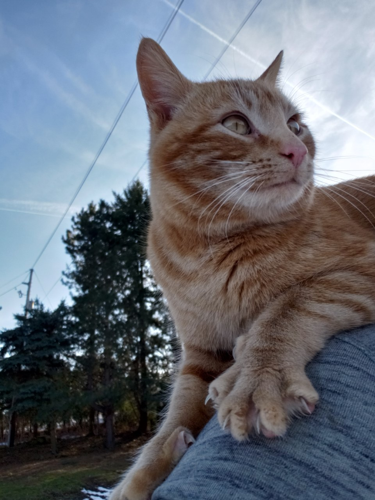
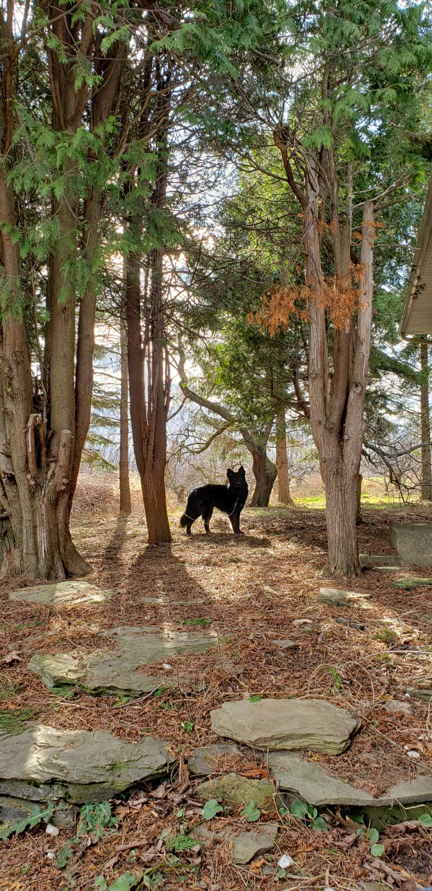
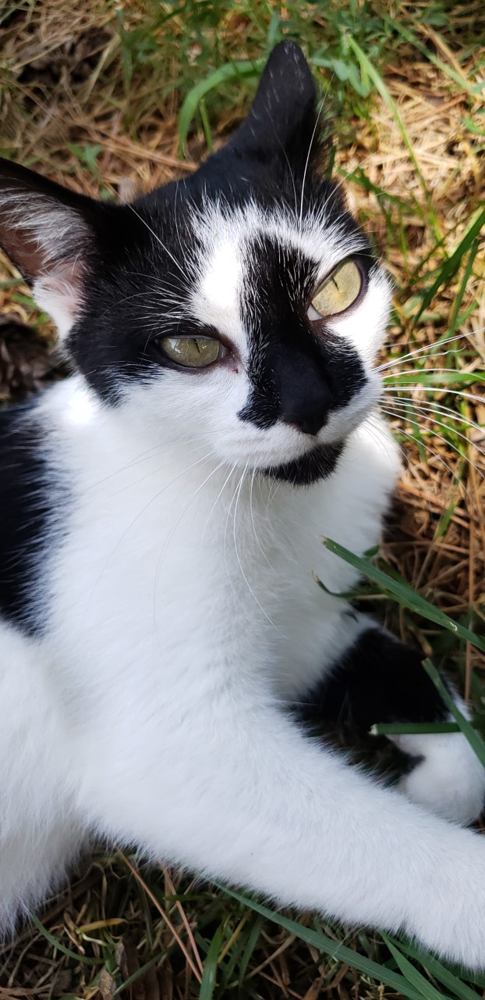
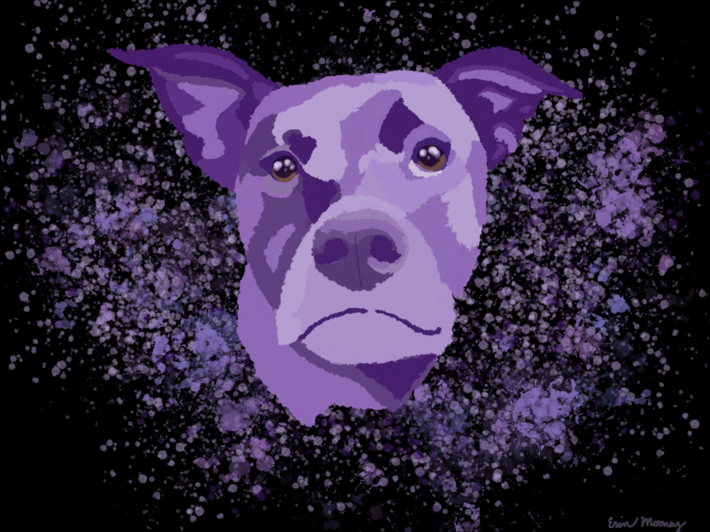

Hello! I have been doing art for a very long time, and have tried many different styles and mediums. Each of these pieces has a story and a description, but I won't discuss every little thing for every piece, just the important things like the medium(s)!
Birdard PosterThis is Birdard's humble beginning, done in Photoshop. He is modeled after a hummingbird, but without bird legs. So, he has bigger legs. He was a bunch of fun to create, and I am making a graphic novel for him and a few other characters I have made for his universe!

Ballerina Noir is a chiaroscuro piece done in charcoal. It was a class assignment, so I did have a reference picture. However, the reference was a photo, not someone else's art. So, it is more like a study, but I absolutely love it!
Snickerdoodle liked to sit on shoulders and to go on walks. In this photo, he was sitting on my shoulder (guest-starring in the bottom right-hand corner) so this was a particularly difficult picture to take!
Kenai is a Husky and German-Shepard (which gives him his wolf-like appearance). On this specific morning he was getting in a lot of good poses and looking especially dignified.
This is my cat Tula. She is a model of a cat. She gives me a lot to work with, but she also wants constant pats which makes taking the photos difficult! She is a particularly nice subject because of her eyes. She has the biggest eyes I have ever seen on a cat.

I made this very puny cereal box using Adobe Illustrator in high school. I think that a very open market is making space-themed cereal, and since my last name is Mooney I saw an opportunity and seized it!
Korra is my brother's dog, and I made this piece, in ProCreate, for him and his wife. And, yes, her name is a reference to the Legend of Korra.